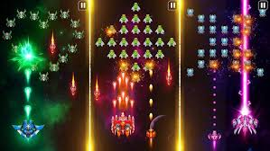

Image Gallery
Here are some images showcasing my work and interests:
Search Engine

Developed a Python-based search engine that retrieves relevant Medium articles with query response times of 500ms–1s. The system incorporates data structures inspired by Google's original PageRank paper (Brin & Page, 1998) at a smaller scale, enabling efficient article ranking and retrieval.
Tetris Game

Developed a classic Tetris game in C++ using the SFML (Simple and Fast Multimedia Library) framework on Kali Linux, leveraging the robust Linux development environment for optimal performance and system integration.
Traffic Sign Detector

Developed a traffic sign detection system using the German Traffic Sign Recognition Benchmark (GTSRB) dataset, implementing Convolutional Neural Networks (CNN) for accurate sign classification and Enhanced Super-Resolution Generative Adversarial Networks (ESRGAN) for image quality enhancement.
Rainfall Predictor

Built a comprehensive rainfall prediction system utilizing five different machine learning models including Linear Regression, Random Forest, Support Vector Machine, XGBoost, and Neural Networks for accurate weather forecasting.
Space Shooter Game
Created an engaging space shooter game using Java and LibGDX framework, implementing core object-oriented programming principles including inheritance, polymorphism, and encapsulation.